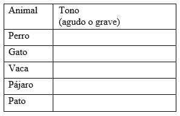

Experiencias

¿Qué vimos hoy?


Ciencias Naturales
Lunes 27 de Abril
Responde las siguientes preguntas y guárdalas en tu carpeta de experiencias para que, en cuanto sea posible, se las entregues a tu maestra o maestro.
Del video ¿Qué es el sonido? Aprende con Dani:
- Explica por qué, cuando Dani habla dentro de la cueva, se produce eco.
- ¿Qué característica del sonido te permite distinguir los sonidos fuertes de los débiles?
- Menciona un ejemplo de sonido en tono agudo y uno en tono grave.
Del video Ciencia acústica Proyecto G:
- Menciona al menos tres sonidos distintos que hayas escuchado mientras veías el video.
- De acuerdo con lo que viste, ¿a qué se deben los distintos sonidos de los instrumentos musicales?
- En compañía de algún familiar, escucha una canción que te guste, ¿qué tonos y qué timbres encuentras en ella?, ¿cuál es su intensidad?, ¿puedes identificar los instrumentos musicales que hay en ella?
Del video Adivina los sonidos en casa 1. Juego para niños
- Produce sonidos con objetos o aparatos que encuentres en casa, ¿cuáles aparatos u objetos tienen un timbre similar? ¿Cuáles difieren en su timbre?
- ¿Qué características sonoras supones que debe tener una alarma de incendios? Argumenta tu respuesta.
- Anota todos los sonidos que escuchas en el día. Menciona, cuáles son agradables e incluso los que son molestos, y relaciónalos con sus cualidades sonoras.
Si en tu casa hay otro libro relacionado con el tema, consúltalo, así podrás saber más. Si no cuentas con estos materiales no te preocupes. En cualquier caso, platica con tu familia sobre lo que aprendiste.
Actividades adicionales
Si quieres practicar más sobre este tema, te invitamos a realizar la siguiente actividad con tu familia:
Cada miembro de la familia escogerá un animal y tratará de imitar el sonido. El resto de la familia adivinará de qué animal se trata.
En un cuadro como el siguiente registra los animales que imitaron y completa la información a partir de lo que aprendiste en los videos sobre el sonido:

Agrega en tu cuadro todos los animales que hayan imitado.
Platica con tu familia sobre lo que aprendiste, seguro les parecerá interesante y podrán decirte algo más.Video 1.- ¿Qué es el sonido?
https://youtu.be/SCiHXsTYWC4
Video 2.- Ciencia acústica Proyecto G
https://youtu.be/mDs1dxnmrTI
Video 3.- Adivina los sonidos en casa 1. Juego para niños
https://youtu.be/hnyywsUbWOE
Artes
Lunes 27 de Abril
Responde las siguientes preguntas y guárdalas en tu carpeta de experiencias para que, en cuanto sea posible, se las entregues a tu maestra o maestro.
Del video Aprendemos los sonidos producidos por el cuerpo humano. Discriminación auditiva:
- ¿Pudiste reconocer los sonidos sin verlos, por qué sucede eso? Explica.
- Después de haber visto el video, menciona dos sonidos que puedes producir con tus manos.
- ¿Qué sonidos haces cuando estás contento? ¿Qué sonido no puedes hacer o lo haces de manera distinta a como lo viste en el video? Explica.
Del video ¿A qué suena un Van Gogh? La sinestesia:
- Después de ver el video, explica ¿qué entiendes tú por sinestesia?, ¿qué tipos de sinestesia recuerdas?
- ¿Tú puedes ver colores en la música? Verás que sí. Pon música como la del video, cúbrete los ojos y cuando finalice anota los colores que te imaginaste a partir de la canción.
Del video Ejercicio de sinestesia 4:
- ¿Qué sentiste cuándo viste el video? Explícalo.
- ¿Por qué el artista dibuja líneas más largas? Explícalo.
- ¿Por qué el artista utiliza diferentes colores?
- Pide a tus familiares que te pongan música como la del video y durante 2 minutos dibuja lo que oyes. Si ellos te acompañan será más divertido el ejercicio. Aunque antes de hacer tu dibujo ve el siguiente video para que tengas más ideas.
Del video Pintar la música. 2009. Esther González:
- Después de realizar tu dibujo, responde: ¿Qué sensación te produce escuchar música y pintar?
Cuando escuches obras musicales en estos días, toma una hoja y dibuja la música que escuches. Que no te preocupe si está bien hecho. Recuerda que estás haciendo ejercicios con tus sensaciones. Siéntete libre para experimentar. También puedes jugar a dibujar la respiración, la tos, el estornudo, el bostezo, el canto de los pájaros, un maullido o un ladrido.
Platica con tu familia sobre lo que aprendiste, seguro les parecerá interesante y podrán decirte algo más.
Video 1.- Aprendemos los sonidos producidos por el cuerpo humano. Discriminación auditiva
https://youtu.be/-7BQ6-UQ0Zs
Video 2.- ¿A qué suena un Van Gogh?
https://youtu.be/u_FB8GNKybg
Video 3.- Ejercicio de sinestesia 4
https://youtu.be/cgowZ3blwbw
Video 4.- Pintar la música. 2009. Esther González
https://youtu.be/_va6r3TrV4M
Matemáticas
Lunes 27 de Abril
Responde las siguientes preguntas y guárdalas en tu carpeta de experiencias para que, en cuanto sea posible, se las entregues a tu maestra o maestro.
Del video Por más aventuras: Suerte para mí:
- ¿Por qué crees que es importante hacer cálculo mental en tu vida diaria?
- ¿Por qué descomponen el dinero en cantidades menores para poder calcular el resultado?
- Para ti, ¿es más sencillo sumar o restar en un cálculo mental? ¿Por qué?
- ¿Hasta con cuántos números puedes hacer cálculo mental?
- ¿Qué estrategias de cálculo mental conoces?
Del video Resolver una suma de 3 dígitos en tu cabeza:
- ¿Cuál es una clave para poder sumar o restar de forma más sencilla?
- ¿Cuál es tu estrategia personal para resolver operaciones de cálculo mental?
- A partir de los videos que viste, ¿crees que vayas a adoptar una nueva estrategia? ¿Cuál?
- ¿Cuál es resultado de la siguiente operación?
a)200-123=_____
b) 746+____=1000 - Pide a alguien de tu familia que realice contigo ejercicios de cálculo mental.
Actividades adicionales
Si quieres practicar más sobre este tema, te invitamos a realizar la siguiente actividad:
Aprovecha cualquier situación que encuentres en tu casa para realizar operaciones en tu mente, por ejemplo, si alguien de tu familia va a la tienda o al mercado, pregúntale cuánto le cobraron y con qué billete pagó. Trata de hacer la operación en tú mente, para saber cuánto le dieron de cambio.
Platica con tu familia sobre lo que aprendiste, seguro les parecerá interesante y podrán decirte algo más.
Video 1.- Por más aventuras: Suerte para m
https://youtu.be/qj0gEyVjVBs
Lenguaje
Viernes 24 de Abril
Responde las siguientes preguntas y guárdalas en tu carpeta de experiencias para que, en cuanto sea posible, se las entregues a tu maestra o maestro.
De los videos PLATA para México en PRUEBA Rutina Libre por Equipos | Nado Artístico | Highlights:
- ¿Qué fue lo que más te gustó?
- Las nadadoras lograron ganar una medalla de plata en los juegos olímpicos, ¿Qué crees que tuvieron que hacer para coordinarse con tanta precisión y presentarlo de esa manera?
De los videos Historia sobre el trabajo en equipo para niños y Trabajo en equipo:
- ¿Qué beneficios encuentras de trabajar en equipo? ¿Qué dificultades encuentras de trabajar en equipo?
- En ambos casos surgieron diferentes puntos de vista y algunos conflictos, ¿Cómo les ayudarías a solucionarlo?
- En los tres videos, los equipos han logrado su meta, ¿Cuáles serían las tres cosas que fueron más importantes para que lo hicieran?
Actividades adicionales:
Si quieres practicar más sobre este tema, te invitamos a realizar la siguiente actividad:
Contesta las siguientes preguntas:
- ¿Qué deporte de equipo practicas o te gustaría practicar, futbol, volibol, basquetbol, a algún otro? ¿Conoces las reglas? ¿Qué es lo que más te gusta de ese deporte? ¿Qué crees que es lo más importante en los equipos de ese deporte para que ganen? Haz un dibujo del deporte que te gusta
- Escribe en una hoja lo que pienses sobre la siguiente idea:
La familia es un gran equipo.
- ¿Tú crees que tu familia es un equipo?
- ¿En qué ayuda que las familias sean como un equipo?
Platica con tu familia sobre lo que aprendiste, seguro les parecerá interesante y podrán decirte algo más.
Video 1.- PLATA para México en PRUEBA Rutina Libre por Equipos
https://youtu.be/3cQvYFJcby8
Video 2.- Historia sobre el trabajo en equipo para niños
https://youtu.be/Gt1W1tsNvmM
Video 3.- Trabajo en equipo
https://youtu.be/OmXjXN_KmMc
Historia
Viernes 24 de Abril
- ¿Qué te parecieron los videos?
- ¿Recuerdas cuando has sentido algunas de las emociones -como alegría, tristeza o miedo que se mencionan en los videos? Escribe o dibuja tus experiencias.
- El rostro cambia con las emociones. ¿Cómo te ves cuando estás enojado? ¿Y cuando estás alegre?
¡A dibujar caritas! - Platica con quien más confianza le tengas sobre las situaciones que no te gustan y te hacen sentir mal y busquen formas para evitarlas
¿Qué tal si elaboras una máscara que represente alguna de las emociones del video? ¿De qué color sería?
¡Manos a la obra!
¿Para qué sirven las emociones?
Fundación PAS
https://www.youtube.com/watch?v=zhp2E6FL3kw
Cuento El Monstruo de Colores
#Aprende las Emociones
https://www.youtube.com/watch?v=__NmMOkND8g